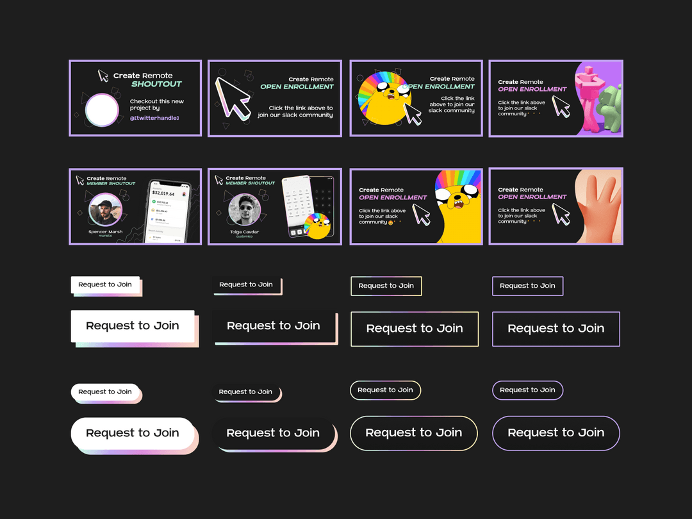

Create Remote
An inclusive space for people in creative tech to share their life + work
Brand Design and Art Direction
Brand Design and Art Direction
As a brand team, we scoured the internet for visuals that were vibrant, fun, and tech-driven, then picked our favorites to narrow in on.
Iterate We wanted the cursor shape, and iterated until we found the right combination of angles, 3D, and gradients.
Once the cursor shape was established, we created a style guide to reference for the website build and social graphics.
As the brand team lead, I made sure that the project stayed on track by creating deadlines. I kicked off the project by setting up frames for the brand team to place photos, screenshots, logo ideas, typography, and anything else that came to mind for inspiration. I iterated on the cursor ideas and made sure that the angles on the final logo were perfect.
Create Remote began as an inclusive slack channel for creatives to connect remotely and share life in 2020 when everything moved online. After reaching over 500 users, Create Remote needed a brand that would scale.
Founders: Create a brand that represents the values of CreateRemote
Brand Team: Design a brand that is accessible and follows the current trends
Brand Team Credits: Hyam Fayed, Tiffany Bishop, Felipe Molina, Tyler Clark, Joseph Alessio
How do you design for designers? Most of the Create Remote community worked as product and ux/ui designers, so we had a unique challenge of creating a brand that brand creators would think is cool.
Because CreateRemote was a community for creatives, the sky was the limit on what we could build. We looked at the most talked about sites at the time - Stripe had just rebranded with gradients, and webflow's No Code Conference page had just launched. We loved the bold looks of webflow's pages, the colorfulness of Stripe, and wanted to balance the bold text with softer gradients.
I planned out the steps that we would need to take in Linear and gave the team deadlines. After that, I built a "brandstorm" page in Figma with frames for Brand Ideas, Existing Assets, a Moodboard, Colors, Logo Ideas, and Typography.
The first week was all about brainstorming, and we scoured the web for ideas. While I focused largely on the moodboard, those better at content strategy laid out their thoughts on Brand Mission, Audience, and Voice and explored gradients.
We loved the idea of a cursor to represent the community, because working remotely is so often seeing other designer's cursors in a figma file. We had been using gradients in previous brand assets, before we had an established brand, because the creator of the community, Hyam, had a gradient visor in her profile picture. I began with a simple cursor, and my team suggested the added gradients and the 3d effects. At the end of the week, I created multiple iterations with thick borders for visibility, and the team voted on which one was the best for our finalized logo.
After we settled on a logo, we needed to create assets for our social media. I played around with different options for the profile picture with solid and gradient backgrounds. I had to change our original gradient to make it stand out against the white stroke. The team tried gradient covers and a solid colored background with our community's mission. I was worried about the header not being able to have alt text on Twitter, so I came up with a pattern of cursors pointing in the same directions, as though it was a ton of cursors in a group figma file together, creating something remotely. I showed it to they team - they loved it and we shipped it that night!
While I worked on the profile graphics, the team experimented with button styles and social graphics. We created a style guide in figma so that the entire design team would have access to the asset libraries in a mini-design system.
Working remotely with this team was such a great experience because it taught me about asynchronus collaboration with designers all over the world. It also taught me to pay attention to a logo at all sizes - the white stroke and gradient got lost in smaller sizes, like a favicon, so had to workshop solutions. This team was incredibly talented and easy to work with, and I'm excited to see what we come up with next!

Product Design, Interaction Design, Design Systems
A groupchat app meant to bring far apart friends closer together
UX/UI Design, Art Direction, Product Design
Joint banking for couples combining their finances for the first time
UI/UX Design, Art Direction, Product Design
Bank serving small business owners of South Florida
Brand Design and Art Direction
An inclusive space for people in creative tech to share their life + work
Currently seeking remote brand design and art direction opportunities on LGBTQ+ inclustive design teams, as well as clients in creative industries